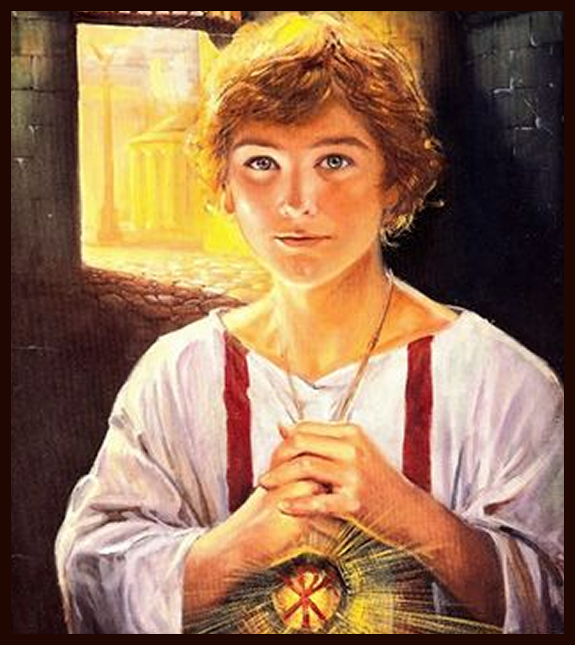

Historia de Santo Antônio

Santo Antônio de Pádua, nascido Fernando de Bulhões em Lisboa, Portugal, por volta de 1195, foi um pregador franciscano canonizado rapidamente em 1232 e proclamado Doutor da Igreja em 1946. Inicialmente cônego agostiniano, mudou-se para a Ordem Franciscana após ser comovido pelo martírio de missionários no Marrocos. Durante uma viagem para pregar na África, uma doença forçou seu retorno à Europa; uma tempestade desviou seu barco para a Itália, onde encontrou São Francisco de Assis e dedicou sua vida ao ensino teológico e à pregação. Conhecido pela eloquência e pelos milagres, Antônio ajudava mulheres pobres a se casarem, ganhando o título de "Santo Casamenteiro". Ele faleceu em Pádua, Itália, em 13 de junho de 1231, aos cerca de 36 ou 40 anos. Sua devoção é amplamente celebrada no Brasil, especialmente nas festas juninas (13 de junho), com tradições como as trezenas e a distribuição de pães abençoados.
Outras Historias:


História da nossa paroquia

A história da Paróquia de Santo Onofre, em Junco do Seridó, na Paraíba, está profundamente entrelaçada com a formação do próprio município. Tudo teve início na Fazenda "Unha de Gato", propriedade do fazendeiro Balduino Guedes, cuja implantação por volta de 1892 marcou o surgimento do povoado. O local, inicialmente conhecido como "Chorão", derivou seu nome da fonte de água doce chamada "Mela Bico", onde a ... Continuar lendo...
Nossas Capelas
Santo Antônio

São Tarcísio